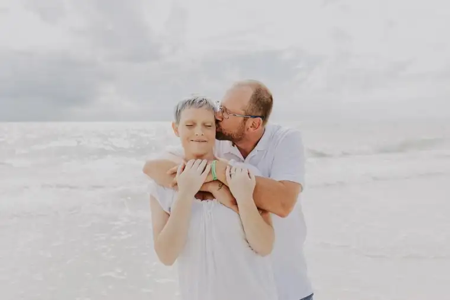
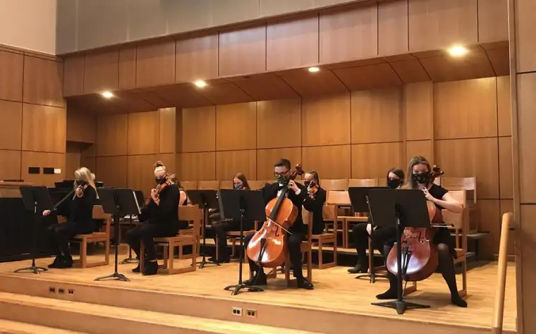
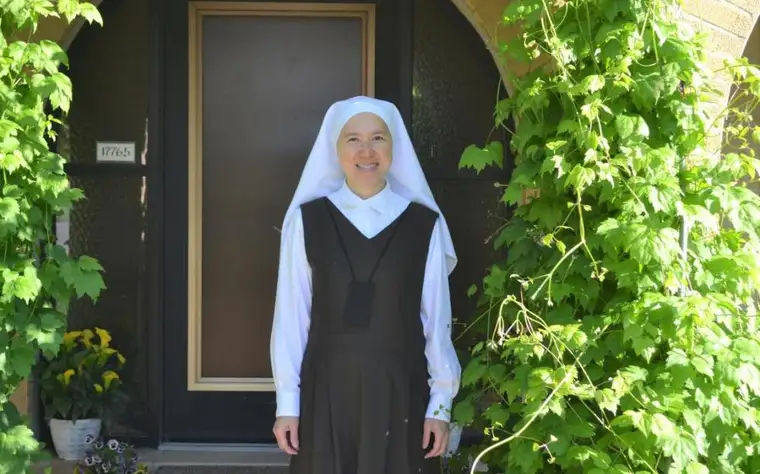
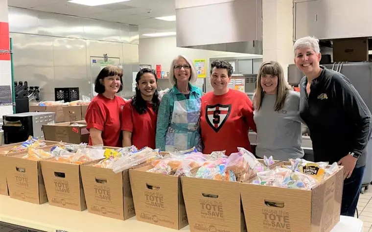

While more personal in nature, as an exercise of reflection, this post, I hope, can inspire other writers, or even readers, to think back on the past year and take an account of what (in writing or reading) brought either a delight or a dampening of spirit; the highs and lows, as it were.
2020 Writing Lows
I’ll start with the top lows. Losing friends is never easy. I ended up writing about a few friends who went beyond the veil between this life and the next in 2020.
Low #1: This early-in-the year article began as a celebration of life and hope. Ultimately, my friend Merideth lost her battle with cancer, and sadly, I and others who loved her could not attend her funeral due to Covid. It still seems strange she’s not here, and not having that closure has prolonged this feeling. Find the article I did on the fundraiser to help her fight here; and the sidebar that remains worth a look about a special day in Merideth’s life here. (I’ll include blog versions for those who cannot access the newspaper.)

https://roxanesalonen.com/2020/02/for-mom-fighting-cancer-chance-to-meet-andy-grammer-was-woven-by-god-friend-says/
Toward the end of the year, several other dear friends passed from this life, including this sweet woman, Dona Joy.
And my husband might not forgive me if I don’t mention the death of one of his music heroes, Neil Peart. Sadly, he lost another, Eddie Van Halen, at year’s end.
https://roxanesalonen.com/2020/03/living-faith-did-rushs-neil-peart-reach-the-pearly-gates/
Low #2: I had to take a hard look at Marxism this year. I didn’t want to, but really felt I had no choice, as this ideology seems to be taking hold of hearts in our nation. It’s disconcerting. So, I wrote about it, and, not surprisingly, was criticized by some readers. The scrutiny only made me feel more certain it was a topic needing to be addressed.
Low #3: Racism. How could we avoid the topic as our cities began to burn and riots broke out everywhere, including here in Fargo, following George Floyd’s unfortunate death?
Low #4: And, oh yeah, the virus. It had to be mentioned in my work. Over and over again, starting in March when the whole world changed — though I did try to pull out some hope from it all.

https://roxanesalonen.com/2020/12/living-faith-spiritual-health-must-factor-into-covid-limits/
Low #5: Politics. It got ugly. I wrote about it a few times. It’s never an easy topic to tackle when the divide is so high, with so much at stake from everyone’s perspective.
2020 Writing Highs
Now for those writing pursuits that seemed more day brightener, even if containing some elements of challenge.
High #1: It was a joy to learn about the journey of this sweet religious sister.

And just down the road from where the interview took place, another story emerged, also inspiring, about a church that underwent some major renovations, helping renew faith in one community.
https://roxanesalonen.com/2020/07/faith-conversations-from-vietnam-to-the-veil-sister-theresa-brings-a-sparkle-to-north-dakota-monastery/
High #2: I also wrote about one of my personal family highlights — our August summer trip to the mountains of Idaho, where I learned something about trust.
High #3: Learning about our school community’s efforts to keep students and their families fed in the early-Covid days was heartwarming.

https://roxanesalonen.com/2020/09/faith-conversations-lunch-ladies-launch-food-help-in-pandemic/
High #4: It’s not always easy to find a meaningful Christmas story, but this year, I was blessed to have one appear at just the right time. I was able to write a second piece for CatholicMom.com about a very sweet aspect of this story that didn’t make it into the newspaper version.
https://roxanesalonen.com/2020/12/live-nativity-held-christmas-miracle-for-family/
High #5: To me, this was probably one of the most meaningful personally in terms of my writing career — having the chance to interview the writers-directors of the movie, “Flannery,” then placing one of my two resulting articles in the National Catholic Register.

This year brought fewer speaking engagements — I look forward to those resuming in time — and I lamented the end of seeing my Forum newspaper articles in an actual paper when my publishing days went to online-only. But for the most part, the writing continued with few pauses, and several projects underway should prove to be especially bright spots in this coming year. Finally, I helped launch two groups on social media that seem to be taking off nicely as ways to encourage and unite people, including a group for local area Catholics and another for Catholic freelance writers across the nation. Good things are continuing to come, even in times of so many unknowns. And through it all, God has been, and will continue to be, good, loving, trustworthy and faithful.
Q4U: What about you? As you look back on the year, what are your writing or reading highs and lows?